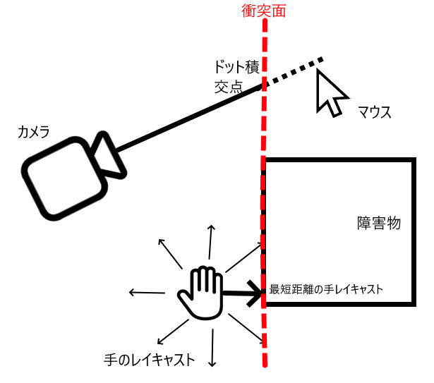

ポートフォリオ
ボルダリングゲーム
概要
宝石を拾い、柱を登るゲームです。いわゆる、縦向きの障害物コースゲームです。12月中旬にベータ版を公開しました。 マトリクス数学を使用し、プレイヤーの手がスムーズに動きながら障害物を乗り越えていくようにしました。
開発の課題
- カメラの向きを含めて、プレイヤーの手をスムーズに様々な障害物を乗り越えること。
- パフォーマンスに影響を与えず、障害物を数多く描画すること。
技術・実装
- 手の動き方手前の障害物を検出するために、手の周囲に複数の球体のレイキャストを行い、障害物の衝突面を取得します。 カメラからマウス方向の線は衝突面に沿った平面で制約されています。これにより、障害物を自然に登れるようにしました。
- 改善点この方法では凹面はうまく登れません。頂点で経路を見つけることで解決できると思います。
- カスタムLODの実装登れる障害物が多く、一気に全部をレンダーすることがパフォーマンス的に不可能です。しかし、エンジン内のLODシステムは遠距離のものを表示せず、「無限に登れる」という没入感が損なわれます。 そのためにクライアント側で4段階のLODを実装しました。500ユニット以上離れたオブジェクトはただのブロック形ですが近距離では詳細なモデルを表示します。
- 改善点高速移動の時でも、素早くロードすることを検討しています。

ブロック工場
概要
ブロックを掘り、加工して売るゲームです。 サーフェスネットを使用し、EditableMeshでボクセル構造のブロックを自由に変更することができます。 UVマップを計算することでさまざまな種類のブロックを表示できます。
開発の課題
- プレイヤーがグリッドに沿って機械を設置できるようにすること。
- ボクセル構成の立体を動的に変更し、最速にメッシュを再生成すること。
技術・実装
- グリッド設置システム自由に機械を設置することが重視だと考えています。データ保存や設置のしやすさを考慮し、3次元グリッドを実装しました。
- 改善点2次元の面に設置するのが簡単ですが、縦方向も考慮する必要があるために、階層切り替え機能も実装しましたが頻繁に「上」「下」ボタンを押す操作は不便だと感じています。 今後よりY軸方向へ設置するシステムの実装を目指しています。
- ボクセル形状の変更1つの大きなブロックは8000(20³)個のボクセルで構成されます。しかし8000のパーツはパフォーマンス面に非常に高くなります。 そのままだと、角は鋭く、自然な見た目になりません。そのために、バイナリデータとして保存しました。単一EditableMeshで描画するために、サーフェスネットを実装しました。 このように、比較的にパフォーマンス負荷が軽く、更新しやすい立方体が生成できます。 それとも、UVマップも再利用することで、テクスチャのメモリー負荷が大幅に軽減できました。
- 改善点頂点数が多くて、メモリ負荷がかなり大きいです。可能な限り、LODを実装したいと考えています。また、メッシュ更新処理に時間がかかるため、並行処理を導入したいです。
水シミュレーション
2.5Dでの大規模な水シミュレーションの実装です。 アクターを使用した並列処理によって、パフォーマンスを向上させました。 水面がボーンを使ってレンダリングしています。
魔法使いアクションゲームのプロトタイプ
「アーマード・コア」シリーズに影響を受けて魔法使い対戦ゲームのプロトタイプを自作しました。 ECS（エンティティ・コンポーネント・システム）で,簡単に技を実装できるようにしました。 カメラやキャラクター操作も自作しました。

ロールバック方式ネットコードの実装
格闘ゲームで主流になっている「ロールバック方式ネットコード」を実装しました。 アニメーションやゲームシステムも自作しました。 「ロックステップ」方式ネットコードに比べ、操作レスポンスに優れています。
特定サイト向け自動情報取得ツール
Node.jsとPuppeteerを用いて、特定のウエブサイトの情報の自動取得プログラムです。 これまでのデータ入力作業を自動化しました。